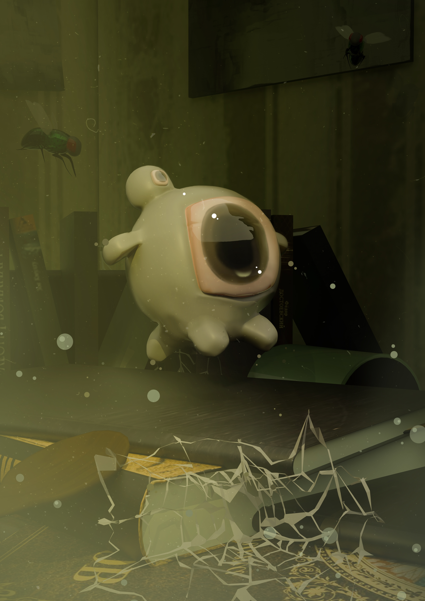
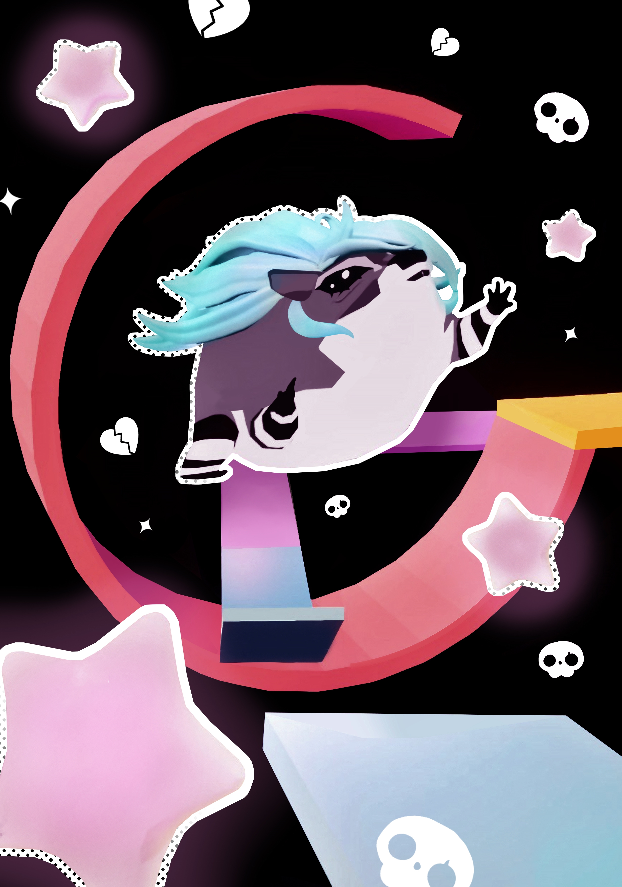
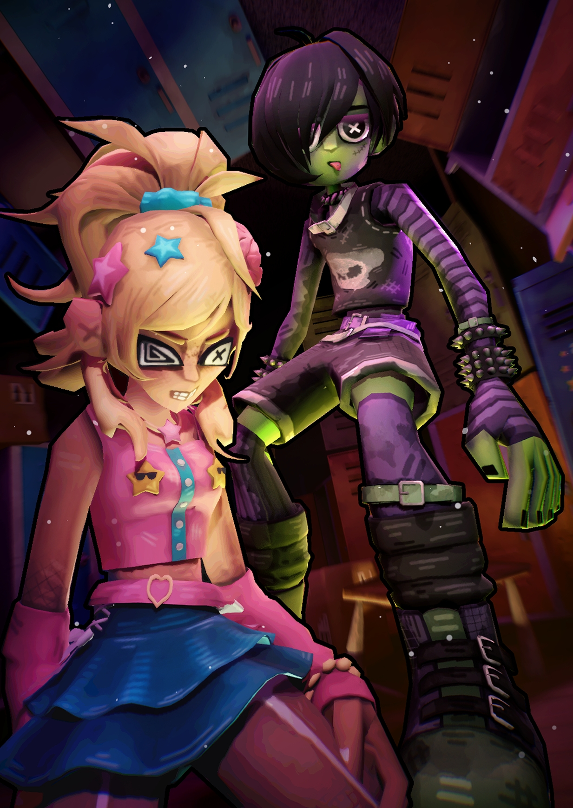
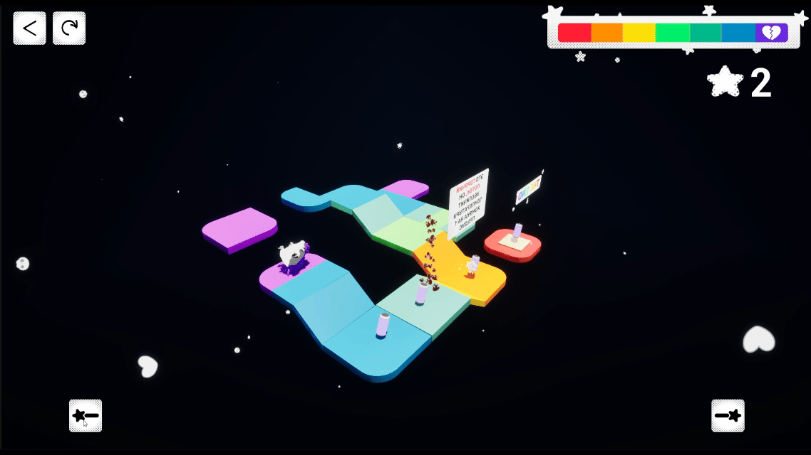
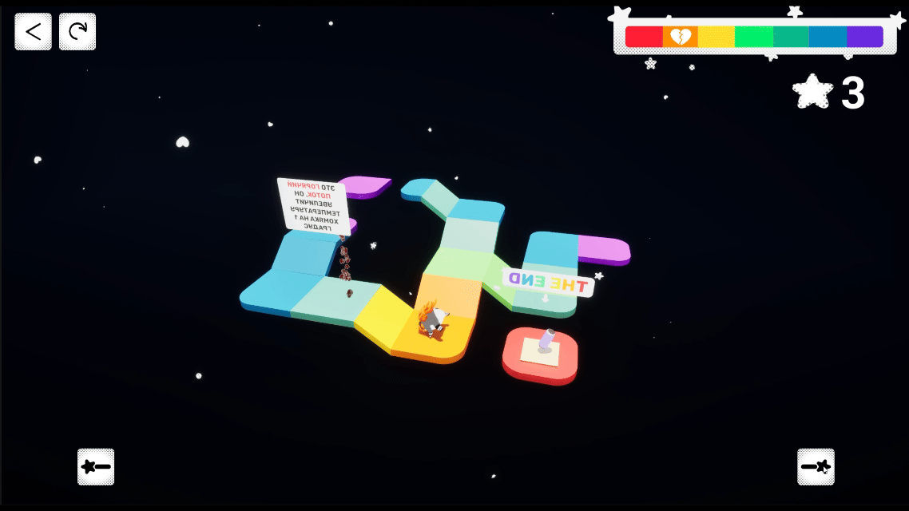

About me
Game Design student at HSE University with experience in Unreal Engine 5 development. I enjoy creating gameplay systems, AI behaviors, and interactive mechanics while collaborating closely with artists and designers.

Dustborn
3D side-scroller platformer. A small but ambitious piece of dust named Zhora should become as big as possible.

Heatpaw
A 3D isometric puzzle game about an emo hamster that needs to walk along paths of different temperatures.

Dr Futura
First-person shooter. A smart zombie, Dr Futura takes over the lab. Dr turns everyone into his own kind.

Brainiac
Dynamic 3D slasher. You are a brainless emo zombie who dreams of surviving a school day.
Dustborn
My Work
Character Absorption Mechanics and Scale Alteration
Technical Breakdown: Implemented a real-time absorption mechanic that queries collided actors. Upon overlapping with a "Dust" subclass, the system increments the Character Scale 3D by a factor of 1.2x via a Timeline component for smooth visual interpolation.

Character Movement Component Tuning & Environmental Hazards
Custom handling of the Character Movement Component. Entering the "Cobweb" volume dynamically alters Max Walk Speed by a factor of 0.5. For the "Fly" platform, an optimized looping Timer by Event tracks player presence; if the character stays registered on the moving platform's collision box for >5 seconds, a scale-reduction event triggers sequentially.


Physics-Based Jump Modifiers & Dynamic Platforms
Leveraged physical interactions with static and simulated meshes. Props like the "Ruler" and "Dresser" act as programmatic launchpads. Upon collision validation, the player class executes the Launch Character function with an overridden Jump Z Velocity multiplied by 3x or 4x respectively, bypassing standard gravity scales. Interacting with the "Pot" utilizes an InterpTo-driven moving platform that functions as a physics lift.


Custom State-Saving & Checkpoint Teleportation
To handle player failure conditions—such as falling into "Clean Zones"—I implemented a transform caching system. Every successful dust absorption event stores the current actor's World Transform into a LastValidCheckpoint variable. Falling into an obstacle resets the character state by calling Set Actor Transform to teleport the player back instantly.

Heatpaw
My Work
Temperature-Driven State Machine & Material Parameter Collections
Developed a core gameplay loop tied to the character's thermal state. The character actor constantly samples the underlying tile data (OnComponentBeginOverlap) to check its color and temperature properties. Sudden temperature spikes or drops adjust a global temperature float variable. This variable drives an Animation State Machine and updates a Material Parameter Collection (MPC) to dynamically change the color of the character’s hair mesh in real-time.

Environmental Hazards & Niagara Particle Interactors
Engineered "Hot and Cold Stream" hazard mechanics using Niagara Particle Systems. These volumetric streams can either damage the player or assist them in reaching high-tier platforms depending on the movement vector. Implemented specialized collision channels for Niagara particles, enabling them to interact with the character capsule and increment/decrement the temperature state array by exactly ± 1 degree upon collision.

Modular UI-Flow & State Management
Designed and programmed a comprehensive UI architecture handling Main Menu, Level Selection, Pause, and Level Complete screens. Built using UMG (Unreal Motion Graphics), the system manages game states globally, keeping track of score parameters (Stars collected).

Dr Futura
My Work
Modular Weapon System & Multi-Type Projectile Logic
Engineered a robust, scalable firing system for multiple weapon classes (Shotgun, Assault Rifle, Sniper Rifle) using data-driven design. Programmed distinct ballistic logic for two separate ammunition matrices using structural profiling: Damage Projectiles (dealing structural health reduction) and Infection Ampoules (applying status effects without base damage values).


Time-Critical Infection Framework & Health Systems
Programmed a modular health component that controls vital states for both the player and enemy entities. Developed a unique Downed State system for human NPCs: when health attributes drop to exactly 0 HP, a critical 3-second runtime countdown is initialized. If intersected by an infection ampoule within this window, a dynamic subclass swap replaces the active pawn archetype with a controllable Zombie minion class.


Technical Art Pipeline: Asset Integration, Niagara FX & Custom UI
Successfully implemented the art asset workflow by setting up weapon models, textures, and importing custom first-person/third-person rigging and animations. Authored spatial VFX inside Niagara Particle Systems to handle projectile impacts, environmental toxic barrel explosions, and healing radiuses. Designed the player HUD using UMG Widget Blueprints, featuring reactive hit markers, screen-space progress sliders, and fluid state change animations.


Brainiac
My Work
Modular Dual-Slot Character State System
Engineered the game's core architecture by programming a data-driven Dual-Slot Inventory System to manage character stances. The primary slot determines active traversal abilities and locomotion meshes, while the secondary slot manages weapon classes and attack logic. Developed runtime validation arrays to handle slot clearing, interactive pickups, and quick-swapping behaviors via Enhanced Input.


Time-Based Brain Rot & Combat Balancing Framework
Programmed a modular combat component tied to an independent Brain Rot State Machine. The system uses looping timers to transition the primary slot asset across three tiers: Fresh, Rotting, and Rotten. Each tier applies non-linear modifiers via a structural array: escalating base attack damage by up to +30% while reducing character max velocity by 25%. Implemented an attack-based cleansing trigger that resets status effects upon hitting high-frequency combat thresholds.

Enemy AI (Stacy & Simon Archetypes)
Designed and built autonomous AI systems for unique enemy subclasses (Stacy the Ranged Spreader and Simon the Area-Denial Hazard). Developed decoupled behavior logic incorporating AIPerception sensing components. Programmed custom BT Tasks and Decorators to handle distant tactical flanking, area-of-effect projectile spraying (Hairhairspray/Mop attacks), and line-of-sight tracking.

Interactive UMG UI-Flow & State Optimization
Programmed a robust UI workflow utilizing UMG Widget Blueprints to handle full-game loop transitions. Bound screen-space slot graphics to directly monitor the underlying Inventory Component delegates. Programmed modular button event dispatchers across all game menus (Main Menu, Level Selection, In-Game HUD, Pause Menu) to eliminate input blocking and optimize state management.


Contacts
Telegram: @thecultofdionysus
Mail: aielgasanova@edu.hse.ru / ajzanat.gasanova@yandex.ru
Github: @kovervolosatyj